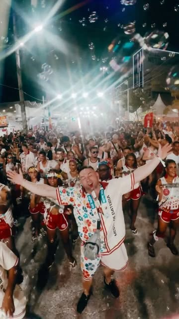
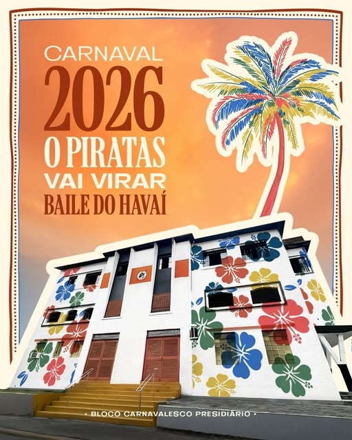
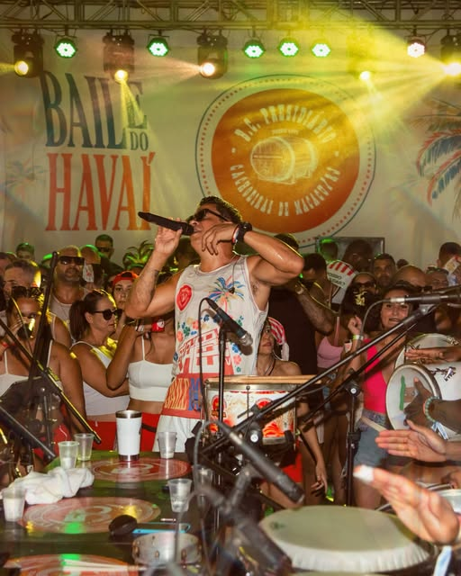
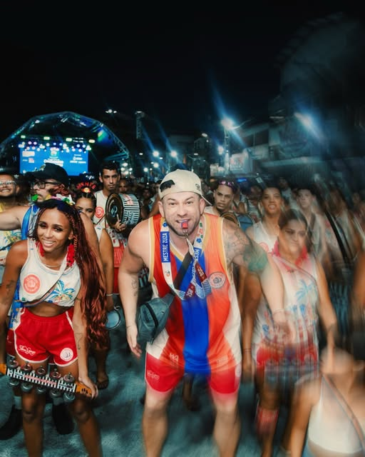
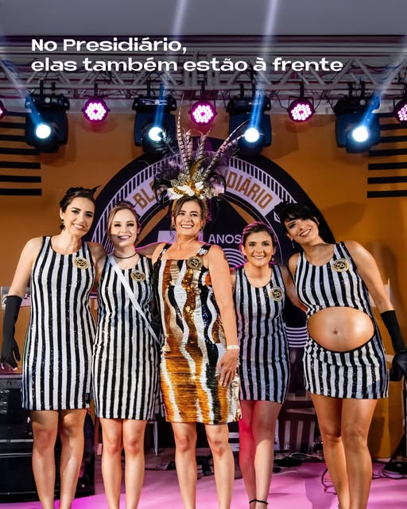
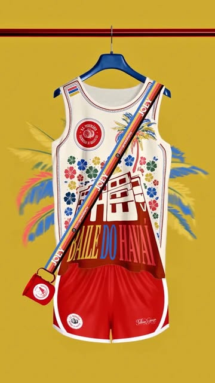

Bloco Presidiário
Bloco carnavalesco de Cachoeiras de Macacu desde 1975. Aqui a listra é uniforme, a sede é o Clube Piratas e a pena é uma só: pular carnaval.
Faltam para o Carnaval 2027

Ficha corrida
Meio século de bloco, registro por registro. Todo mundo aqui é reincidente.
-
1975. Dezessete amigos e uma ideia
Um grupo de 17 amigos funda o Presidiário em Cachoeiras de Macacu. A brincadeira de turma vira bloco, e o bloco vira tradição da cidade.
-
2023. Arrastão no Centro
O tradicional Arrastão concentra no Clube Recreativo Piratas e leva famílias e amigos às avenidas Floriano Peixoto e Lord Baden Powel, ao som de hinos do carnaval carioca e dos sambas do próprio bloco.
-
2025. 50 anos de listra
O Presidiário chega aos 50 anos, contados desde aquela turma de 17 amigos.
-
2026. O Piratas vira Baile do Havaí
O enredo é puxado pelo colar de flores e traz de volta os lendários Bailes do Havaí do Clube Recreativo Piratas, a sede do bloco. O Havaí, aqui, se chama Carnaval.

O cartaz do enredo 
No palco, Celeiro Samba Clube -
2027. Modo blackout
Silêncio também faz parte da preparação. O próximo capítulo do enredo está sendo escrito, e o bloco só conta quando chegar a hora.
O Arrastão
O esquenta antes do carnaval: o Presidiário sai da sede e arrasta Cachoeiras de Macacu pelo Centro.
- Concentração no Clube Recreativo Piratas A sede do bloco. Na edição de 2023, a partir das 16h.
- Saída para o Centro Em 2023 o bloco ganhou a rua às 20h.
- Avenida Floriano Peixoto Hinos do carnaval carioca e sambas do bloco.
- Avenida Lord Baden Powel Famílias, amigos e muita listra no Centro.
Horários e trajeto da edição de 2023. As datas de 2027 saem primeiro no Instagram do bloco.


Vista a listra
O nome já entrega o uniforme: listra preta e branca. Em cima dela, cada carnaval pinta o enredo do ano.
Em 2026 o abadá veio estampado com as flores do Havaí e a fachada do Piratas. Em 2027, só o bloco sabe.

PRESID, vamos começar?
Modo blackout ativado. O enredo de 2027 está sendo preparado e o bloco ainda não abriu o jogo. Quem segue no Instagram fica sabendo primeiro.
O Carnaval começa no sábado, 6 de fevereiro de 2027
Agenda 2027
- Lançamento do enredoa confirmar
- Venda dos abadása confirmar
- Arrastão no Centroa confirmar
- Desfiles no carnaval, 6 a 9 de fevereirohorários a confirmar